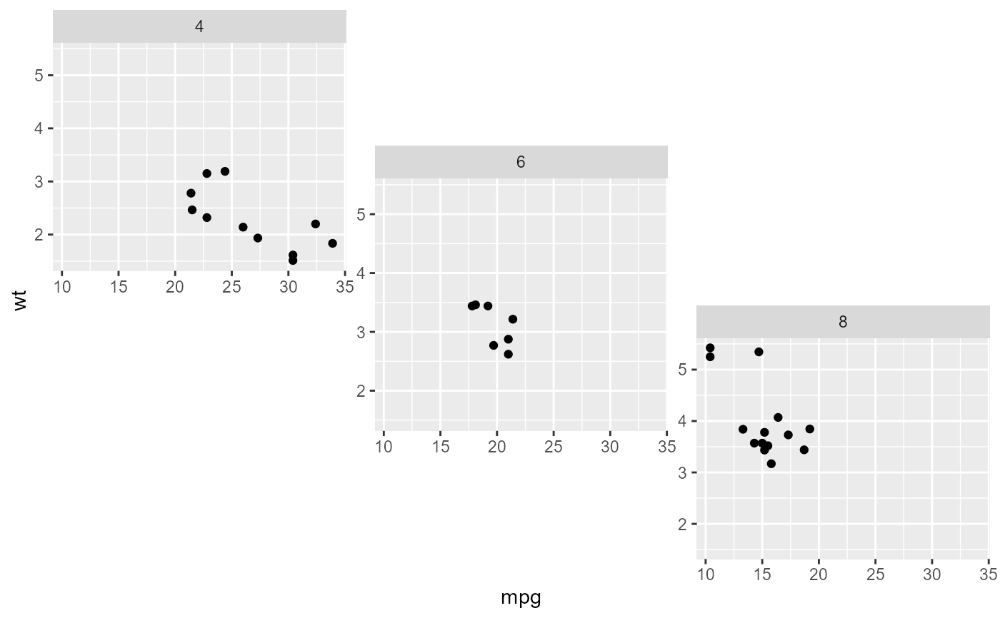
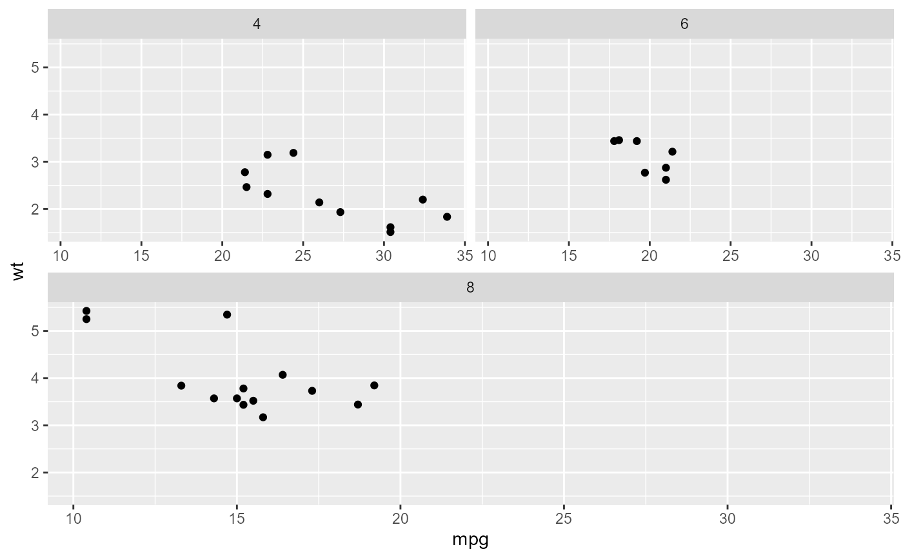
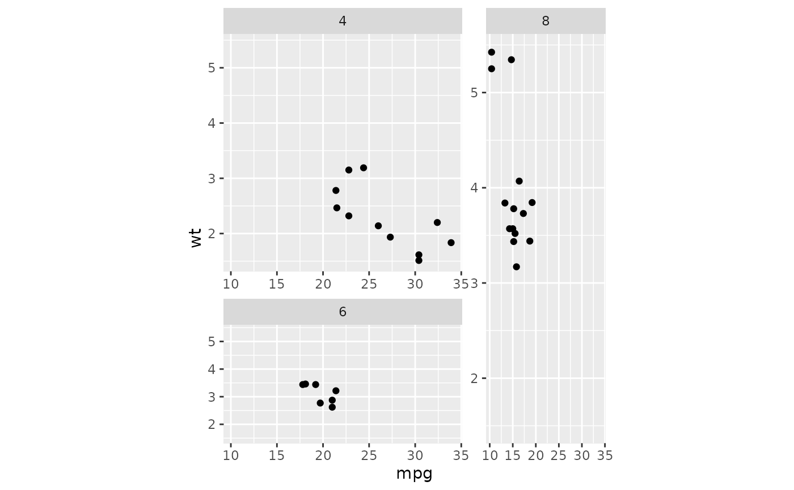

In facet_manual() the layout for panels is determined by a custom design.
Inspired by base-R graphics layout() function, this
variant of facets offers more freedom in how panels are displayed, but
comes with less guarantees that it looks right.
facet_manual( facets, design = NULL, widths = NULL, heights = NULL, respect = FALSE, drop = TRUE, strip.position = "top", scales = "fixed", labeller = "label_value", strip = strip_vanilla() )
| facets | A set of variables or expressions quoted by For compatibility with the classic interface, can also be a
formula or character vector. Use either a one sided formula, |
|---|---|
| design | Specification of panel areas in the layout. Can either be
specified as a |
| widths, heights | A |
| respect | A |
| drop | If |
| strip.position | By default, the labels are displayed on the top of
the plot. Using |
| scales | A
|
| labeller | A function that takes one data frame of labels and
returns a list or data frame of character vectors. Each input
column corresponds to one factor. Thus there will be more than
one with |
| strip | An object created by a call to a strip function, such as
|
A Facet ggproto object that can be added to a plot.
Other facetting functions:
facet_grid2(),
facet_nested_wrap(),
facet_nested(),
facet_wrap2()
# A standard plot p <- ggplot(mtcars, aes(mpg, wt)) + geom_point() # The `design` argument can be a character string. # New rows are indicated by newline symbol (`\n`), which are added # automatically for multi-line strings. # The `#`-symbol indicates empty cells. design <- " A## AB# #BC ##C " p + facet_manual(~ cyl, design)# Alternatively, the `design` argument can be a matrix. # Using `NA`s will leave the cell empty. design <- matrix(c(1,2,3,3), 2, 2, byrow = TRUE) p + facet_manual(~ cyl, design)# The sizes of columns and rows can be adjusted with the `widths` and # `heights`parameters respectively. p + facet_manual( ~ cyl, t(design), widths = c(2, 1), heights = c(2, 1), respect = TRUE )